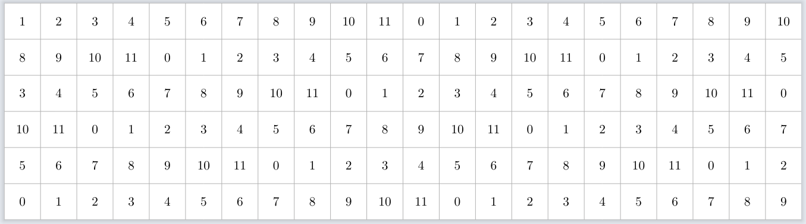

To learn you have to be able to take ideas created in the standard system and be able to convert them into the anchor system. Notes get converted to their number representation, interval names are converted to their number of steps, chord symbols, scales get turned into their relative interval collections and roman numerals get converted into anchored intervals.
To communicate you need to do that all in reverse, since the anchor method doesn't use structures to create chords, but instead allows you to pick and choose your own anchor intervals, then you'll need to find a chord symbol (probably with extensions and/or alterations which best describe it).
Focus on having notes in the bass, mids and treble most of the time, and make sure to keep some sort of steady rhythm as your taking on the roles of all the band members at once.
All along we've been keeping track of the ais that we're currently playing on the fretboard, we also know how vertical and horizontal movement affect these ais, since we have all this information we can start to think about the fretboard in our mind without even having a guitar.
In order to take your hand movement on the fretboard to the next level, you need to be able to move it around freely across the neck instead of staying in one position.
Learn how to traverse ai collections using skipping patterns, moving diagonally and vertically in large jumps, using fret numbers to aid your vertical movement, harmonics, artificial harmonics, tapping (two handed as well)